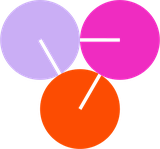

Load
A coordinator reads the whole team's reports. In a natural collective each member reads only what is near it.
Research project · manuscript in preparation
Honeybee swarms, ant colonies and bird flocks coordinate with no one directing the whole. We test their mechanisms against a central coordinator in teams of up to 1,024 language-model agents.
Paper, soon Code Video Slides Episode viewer
University of Illinois Urbana-Champaign · Together AI · Google · MatriAIx · Harvard University · Stanford University

together.aiThe question
Many multi-agent systems of large language models rely on a coordinator, one agent that reads every report and gives every order. Its work grows with its team: with 128 drones it must read 128 reports and, in a single reply, assign every idle drone without overstaffing any site.
Animal groups never had this option, because no animal can read every report from its group. A language-model system can. We therefore compare a coordinator with designs built on mechanisms of natural collectives on the same tasks, and we introduce NatureSwarm, a decentralized design that combines several of these mechanisms.
A coordinator reads the whole team's reports. In a natural collective each member reads only what is near it.
Drones under a coordinator wait for its reply while the fire spreads. In a collective no member waits for an order.
Every report and every order passes through the hub. In a collective no single member can stall the group.
Try it
Switch the organization, change the team size and silence the hub. The picture is a schematic of the two organizations, not a recorded episode.
1,024
A coordinator and decentralized designs on the same task.
41%→79%
Coordinators run by smaller models, against drones using insect-inspired mechanisms.
15of17
A law fitted on small teams predicted the decline in larger ones.
Recorded episodes
Every animation plays a recorded episode; positions, fire and scores are read from the recording.
Findings
Mechanisms from natural collectives overtake it where it cannot keep them so, or where it fails.
Coordinators served small, reliable teams well. With 128 drones in the simulated wildfire rescue, coordinators run by smaller language models saved 41% of victims, whereas drones using insect-inspired mechanisms saved 79%.
Pick a language model, then point at the chart to read each design at a team size.
Padding the prompt of an eight-drone coordinator to the lengths of larger teams cost little. The decline came from having to assign work across the whole team's options, and a similar decline appeared in a text task without a map.
The second view shows how long a prompt each design reads as its team grows.
A simple law, which we call a span-of-control law, gave the team size at which nature-inspired mechanisms overtook a coordinator. Of 17 results in larger teams, 15 lay inside its predicted range.
Choose a model to see its fitted line, its prediction and each team that was run.
With 1,024 drones, NatureSwarm run by a small model came close to a frontier model's coordinator at under a third of the price.
Once model calls took time, NatureSwarm outperformed even the frontier model's coordinator, and it kept teams working when radio links or the base failed.
Switch between slow calls and a silent base; the replay button runs the episode again.
Every chart draws the values plotted in the manuscript's figures.
Method
The task stays the same while the organization changes and the team grows.
24 missions in four families: choosing a nest site, foraging along trails, competing for resources and migrating. Harder variants lose scouts, block paths, add rival colonies and hawks.
Drones with limited battery charge and radio range search a burning area for victims. Teams grow from 8 to 128 drones, and the largest runs reach 1,024. A base station can fall silent and model calls can take time.
Each agent must solve one theft case whose evidence is split between it and its two neighbours. It checks whether the findings depend on a map.
The baseline common in multi-agent systems: one agent reads every report and directs the others.
Each is built on one mechanism of social insects, bird flocks, fish schools, wolf packs, slime moulds or fireflies. The simplest, response-threshold drones, lets each drone take the task whose need exceeds its own threshold, as honeybee workers start to fan the hive, each at its own temperature.
Every agent carries the team's record and decides for itself. Its mechanisms share, verify and forget: records pass from agent to agent, a report states what its sender saw, and old reports fade. It comes as team-wide, neighbour-only and adaptive NatureSwarm.
Code
The release holds the three test beds, every design, scripts for the main experiments and the episode viewer. Each design has a model-free policy that reads the same prompts as a language-model agent, so episodes run offline.
git clone https://github.com/NatureSwarm/NatureSwarm
cd NatureSwarm && pip install -e .
natureswarm run rescue --design natureswarm --mission rescue-basefail
natureswarm record bees --seed 2 -o viewer/traces/bees.json
natureswarm experiment rescue-scaling --smoke
natureswarm view
python -m pytestTeam


Correspondence: Kunlun Zhu, kunlunz2@illinois.edu · Gene Robinson, generobi@illinois.edu
About
Kunlun Zhu, Hongyi Du, Junyu Lu, Zhongzhu Zhou, Malavika Venu, Xiangru Tang, Xiaomin Li, Pan Lu, Shang Zhu, Jiaxuan You, James Zou, Heng Ji and Gene Robinson.
Manuscript in preparation, 2026.
@unpublished{zhu2026natureswarm,
title = {Nature-inspired coordination helps multi-agent
language-model systems where central control
reaches its limits},
author = {Zhu, Kunlun and Du, Hongyi and Lu, Junyu
and Zhou, Zhongzhu and Venu, Malavika and Tang, Xiangru
and Li, Xiaomin and Lu, Pan and Zhu, Shang
and You, Jiaxuan and Zou, James and Ji, Heng
and Robinson, Gene},
year = {2026},
note = {Manuscript in preparation}
}